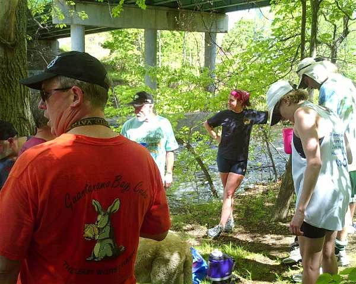

The Mammories Day Hash: Bimbos and Hounds Galore!
Run #999, May 30, 2005
Hare: Basket Boom Boom
Co-Hares: Oozing SD and Bondo Jovi
Location: Burrillville Middle School.
Weather: High 70’s and sunny.
Present: Concrete Feet, Async, Dr. WHO, Tinker, Dry Foot Fairy, Fuwangi Boner,
Granola, Trail Hoover, Sneezergasm (Pecker Checker), Just Michelle, Seamus, Jake, Ben, Shits on Bunny and Briar.
Visitor: Just Sarah (West Virginia H3).
On-on-on: Dog Meat and Jody.
Not Present: WIPOS.
The Run:
“Nine hundred ninety-nine RIH3 hashes gone by, Nine hundred ninety-nine RIH3 hashes;
One more I suffered, that I wish to forget, Nine hundred ninety-eight hashes gone by.”
Scribe’s Note: This week bimbos and hounds together outnumbered the male wankers – Unbelievable! It only
took 999 runs for RIH3 to finally get its act almost together. Unfortunately, it was more like a one in a thousand
freak occurrence. So for this serendipitous and joyous occasion, the scribe will exclude the names of the regular
ball-bearing (get it? Ha, ha) hashers from the write-up – ala Basket, Async, Bondo, Dr. WHO, Dry Foot Fairy, Oozing, Fuwangi,
and Tinker. I for one say good riddance! That much closer to a perfect hash.
It was a warm sunny day, perfect for picnics and cook-outs; however, pathetic weather for a hash. Being that it was a
holiday, the hash started at two o’clock. And on the eve of the RIH3 1,000th, nobody could guess who might come out of
the woodwork. Who is this idiot I’m talking to? Thought Just Sarah, visiting from
West Virginia. It was Concrete Feet, of all possible hashers! Didn’t he die like 10 years
ago? Incredible! Coming out of his grave to hash again. Then Pecker Checker arrived
from CT. Concrete Feet in the presence of two youthful bimbos. He thought he was in
hash heaven until the regular wankers gradually showed up.
A Woonsocket wanker brought Ben and Jake. Adding to the
bimbo and hound count, Granola arrived with Shits on Bunny
and Briar, and sadly her boyfriend in tow. And to complete this joint RIH3 - AKC hash,
Seamus finally arrived, yet disappointingly so did the hare. At least the hare brought
a pitcher of beer and Trail Hoover to ease the tension in the air. [If only he could
have ditched the shrink. But I digress.] By the time everyone congregated, Just
Sarah could never have known she’d be in the presence of so many wankers with dogs (outside of a West
Virginia coon hunt).
The pathetic group stood around with uneasy and quiet anticipation, as though something spectacular (or disastrous)
would soon transpire on the 999th RIH3 hash. Or perhaps it was the hare, promising some virgin territory, in
Burrilliville of all places! Well, he was still blind and recovering from his eye operation, thus light or dark, it
made no difference. It all could be virgin from his perspective. Nevertheless, they were off, heading northeast
out of the middle school parking lot and into the woods.
The hare's
vision on a good day
First check was quickly reached, and all hell broke loose. The horror! The co-hare dove straight into the woods,
ignoring the obvious trail to the left or right. Incorrectly assuming that the co-hare had some inside knowledge,
most followed him into the woods, scampering around looking for any sign of a mark. Even Trail
Hoover, Just Sarah, and Pecker Checker were fooled.
After 10 minutes of aimless wandering, Concrete Feet found true trail heading west along
the shiggy-less trail.
Just Sarah confessed that West Virginia hashes never run on trails. What? Which West
Virginia was she from again? Oh yeah, the up-scale yuppie urbanite West Virginia. Already regretting this hideous
mistake, she bravely (stupidly) continued on, and gave up the last chance to retreat and escape. Trail soon reached
Chepachet River, where the question was not “if” but “when” the trail will cross the river. Most guessed wrong at the
check searching along the banks of the river.
At about this time, Just Michelle, celebrating her graduation from RISD, joined the hash
and was welcomed by an empty parking lot. Somehow, she found trail, since the hare didn’t bother to leave an arrow for
any late-cumers. And like everyone else, she dove into the woods at the first check, rather than searching along the
obvious trail. RIH3 mentality seemed to be contagious, even the highly educated were helpless to instinctively wallow
in shiggy.
Just
Michelle discovering the love of RI shiggy. But those feet look awefully dry!
The first river-bank check turned out to be a tease, as true trail went into briars and rhododendrons heading
back southeast. Trail haphazardly zigzagged back and forth, covering every square yard between the middle school and
the Chepachet river, thus assuring that at least one foot of trail would be virgin. [But this also assured that
there would be no virgin territory in the area ever again, being that Burrillville is the village whore of RIH3
hashing. But I digress].
With every potential virgin spot covered, trail finally led back to the river. Fervent with glorious anticipation
for a river crossing, the regular ball-bearing wankers waded across the river with confidence that trail was there.
The co-hare declared “On-on!” but all others knew better. The hare helped bring all on true trail, saying that Pecker Checker was hot (an unnecessary, yet explicit confession). On the other hand, Pecker Checker was hot, as she was standing 10 feet away from the mark hidden on the river
bank. Trail went downstream for a short while, and finally, finally, finally crossed the river. The two fly
fishermen nearby had the unfortunate experience of witnessing an RIH3 river crossing. Knowing that there would now
be no trout in the area, they grumbled as they packed up and left.
Just Sarah, not knowing the errors of her ways, followed the FRB’s along true trail,
crisscrossing the foot path and into a plethora of fine mud, muck, and mire. Most of the others wussed out and
short-cutted along the high and dry foot path. Heading east, trail exited the woods and onto Reynold’s street for a
little pavement pounding. Southeast along Rt. 7 to the 7/102 intersection. Trail crossed 102 marked by an arrow, but
the hare called everyone back to the non-existent beer check under the 102 bridge. Everyone gathered on the north
side of the river bank, anticipating the beer, but there was no beer. On the south side stood the other co-hare
from Woonsocket, alone with the beer.
Even with beer on the other side, nobody cared enough to be in the company of that particular wanker. Then Just Michelle finally caught up, next to the beer and that particular wanker. Now with a bimbo
at the beer check, the beer seemed more enticing. Concrete Feet was first to brave the
heavy and fast currents of the Chepachet to the beer. A few others braved the rapids in pursuit of beer. Amazingly
and unfortunately, nobody lost footing to be washed away. The hare took the high water and crossed at the dam. The
ones with brains took the bridge across to the beer check.

Just Sarah pondering the meaning of life. Pecker Checker and a Pakistani praying to Allah.
And a hashing Gitmo
detainee escapee now turned proctologist.
All savored Trinity IPA and song broke out. A couple in a canoe arrived to a singing bunch of wankers. Granola, Shits on Bunny, and Briar,
feeling sorry for them, welcomed the couple, failing to convince them that hashers were not lunatics. Finally, the
couple mustered the courage to tow their canoe past the hashers to cross the dam. Of course, nobody offered to help.
Typical wanker behavior. It was time to continue the run. Again, those with brains, took the 102 bridge across
to trail leading southeast along Rt. 7. The others, as well as Trail Hoover, successfully
braved the rapids again and slowly caught up to the others.
Bondo checking out the chick (or the dude) in the canoe. Don't ask, don't tell - (Un)Official RIH3 policy.
Note that all hashers in this photo have a beer in their right hand. What does Bondo have in his
right hand?
And what's Jake doing? No wonder the grin on his face!
South along Douglas Pike, and then west onto Victory Highway, they were slowly completing the clockwise loop.
Ben did his best on Douglas Pike to get hit by a car, but there would be no such luck on
this day. Before continuing, they all had to visit the sand pits of Burrillville. True trail headed up the hill and
into the woods. The pack quickly spread out, leaving nobody to help the now lost Pecker
Checker. Crossing Victory Highway and onto 102, the trail concluded back at the Burrillville Middle School.
Concrete Feet was first to arrive, thus showing that hashing is much like riding a bike.
Or perhaps after dozens of Burrillville hashes, he had the area committed to memory. The horror!
The Burrillville Sand Pit. Ain't she lovely?
As the hashers petered into the parking lot, everyone eventually arrived except for Pecker
Checker. One particular hasher grew uneasy, as he was sure he would earn hashit again by rescuing Pecker Checker, or worse given a new name that accurately describing his pathetic sex life.
Fortunately, she arrived, and all was well. Minus Just Sarah, they departed for
the hare’s house for the circle and On-on-on. Just Sarah offered a lame excuse for her
early exit, grumbling something about having to pick someone up at the airport, or something to that effect. This
time, nobody made any bets on her guaranteed return to RIH3.
Circle was held, down-downs for the hares, visitors, and backsliders. Comments on the run: More bimbos than anyone
can ever recall! Virgin, sparse, but truly virgin territory! The return of Concrete Feet!
Beer check on the wrong side of the river! No “B” marking a beer check! Shiggy galore! All brilliant! On the other
hand, nobody lost, not even the hare. A particular wanker from Woonsocket was present for part of the run. Total:
+6.9! Hashit: Who else, that particular wanker from Woonsocket who had to ditch a hash for his father’s
funeral. Then the hare produced a printed version of “R I H 3” for everyone to take turns singing verses. It was
fine communal singing until the last three verses, authored by the scribe, and then the song went to sh*t. Religion,
and onto the food and more drink!
With good food and savory Trinity IPA on tap, all were happy. Dog Meat coordinated the
food preparations and revived the bimbo count after the loss of Just Sarah. Jodi arrived skyrocketing the bimbo count to astronomical levels! Every hash should be the
999th hash! Even Granola's boyfriend was unusually well-behaved. Hmmm... Granola should hash with RIH3 more often. It started to rain, but it was too late to be credited
to the run. Pecker Checker was enshrined into RIH3, and renamed as
Sneezergasm. Oh the things they do to ensure no bimbos ever return (save Trail
Hoover)! Slowly, some started to depart, and a particular assoooo threw all the hash cash into the pool. And
just to increase his assooo-ness, he plunked the bills with ice cubes causing all the bills to sink to the bottom. At
least it wasn’t a tv. Then the assoooo departed to everyone’s relief.
Speaking of talking assooo’s… The best part of the day came when the village proctologist claimed he had “Lulu’s
Talking Asshole” with him. Only Dog Meat, Trail Hoover,
Jodi, the hare, the village shrink, the scribe, and the village proctologist remained to
enjoy this classic film. Plenty of girl-on-girl, two cigarette scenes, a talking Oscar meets Lulu and then engulfed
by Lulu, and foreign language erotica fast-forwarded for added effect. Spectacular! On the down side, Lulu
desperately needed a haircut, and the male actors could have benefited from Viagra. On a whole, the scribe still gave
it a three thumbs up. And that concluded the 999th complete waste of a day.
Could there be a keg of beer at the end of this rainbow?
“One RIH3 hash gone by, Only One RIH3 hash;
Oh no! What have I done? This is so much fun! I want another thousand hashes to run!
Hallelujah!”
-- Thanks to Just Michelle for the photos!
On On
Dry Foot Fairy